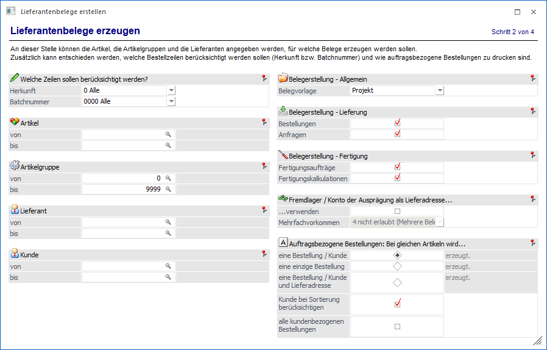
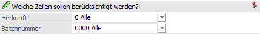
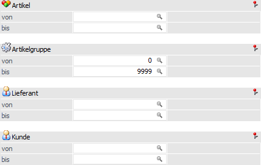
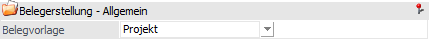
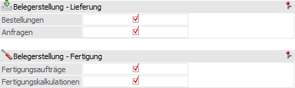
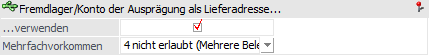
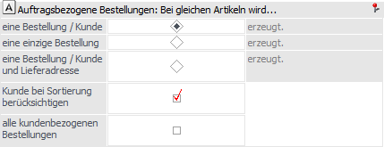

In dem Bereich "Lieferantenbelege erzeugen" kann definiert werden, welche Bestellzeilen bei der Erzeugung berücksichtigt werden sollen und wie auftragsbezogene Bestellungen zu drucken sind.
Achtung
Durch Anwahl des Buttons "Vor" werden direkt, aufgrund der hier getroffenen Einstellungen bzw. Einschränkungen, Lieferanten- und Fertigungsbelege erzeugt!

Folgende Einstellungen und Einschränkungen stehen in diesem Bereich zur Verfügung:
Welche Zeilen sollen berücksichtigt werden?

Ø Herkunft
Mit Hilfe der Auswahlliste der Einstellung "Herkunft" kann entschieden werden, welche Einkaufs-Dispositionszeilen bei der Erzeugung der Lieferanten- bzw. Fertigungsbelege grundsätzlich berücksichtigt werden sollen:
ü Alle
Es werden alle
Einkaufs-Dispositionszeilen berücksichtigt.
ü kundenbezogene Bestellungen
Es
werden die kundenbezogenen Dispositionszeilen berücksichtigt, d.h. Zeilen, die
entweder auftragsbezogen oder vom automatischen Bestellvorschlag, erzeugt
wurden.
Hinweis
Damit kundenbezogene Bestellungen im automatischen Bestellvorschlag erzeugt werden können, muss im Artikelstamm, bei der Option "Einkauf" (Register "Lager" - Unterregister "Einstellungen"), die Einstellung "1 - Einzelzeilen" hinterlegt worden sein.
ü ohne Kundenverweis
Es werden
nur Zeilen ohne Kundenverweis berücksichtigt, d.h. Zeilen, die ausschließlich
vom automatischen Bestellvorschlag, erzeugt wurden.
Hinweis
Bei Auswahl dieser Einstellung werden die Felder "Kunde von / bis" und "Auftragsbezogene Bestellungen" für eine Eingabe gesperrt.
ü von auftragsbezogenen
Bestellungen
Es werden nur auftragsbezogene Bestellungen berücksichtigt, d.h.
Zeilen, die beim Druck eines Kundenauftrags und nicht vom automatischen
Bestellvorschlag, erzeugt wurden.
ü vom automatischen
Bestellvorschlag
Es werden nur die Zeilen aus dem automatischen
Bestellvorschlag berücksichtigt, d.h. Zeilen, die vom automatischen
Bestellvorschlag erzeugt wurden, unabhängig davon, ob ein Kundenverweis
vorhanden ist.
Ø Batchnummer
Abhängig von der Einstellung "Herkunft" kann an dieser Stelle eine Einschränkung auf die Batchnummer erfolgen, auf deren Grundlage die Lieferantenbelege erzeugt werden sollen.
ü 0000 - Alle
Es werden alle
Batchnummern (unter Berücksichtigung der Einstellung "Herkunft")
berücksichtigt.
ü ---- - auftragsbezogen
(Standard)
Es werden die auftragsbezogenen Bestellungen berücksichtigt,
welche im Standard-Stapel vorkommen.
ü AB0x - auftragsbezogen (Stapel
x)
Es werden nur die auftragsbezogenen Bestellungen berücksichtigt, welche im
Stapel x (1 bis 9) bereitstehen.
ü 0001 - Batch-Nr.1 (Datum: …)
Es
werden die Zeilen eines zuvor (automatisch oder manuell) erstellen
Bestellvorschlags berücksichtigt.
Hinweis
Die Batchnummer setzt sich wie folgt zusammen:
ü Batchnummer
ü Batchname
ü Batchbezeichnung (siehe Programm "Bestellvorschlag erstellen", Register Bestellbatch)
ü Datum
ü Benutzer
Grundselektion

Ø Artikel von / bis
An dieser Stelle kann eine Selektion auf die Artikel vorgenommen werden, für welche Lieferantenbelege erzeugt werden sollen.
Hinweis
Wird im Feld "Artikel von / bis" z.B. nur eine Artikelnummer eingegeben und dieser Artikel hat auch noch Ausprägungen, so werden alle Ausprägungen automatisch mit angedruckt. Nur wenn während des Anklickens des "Ausgabe-Buttons" die STRG-Taste gedrückt wird, wird nur der Hauptartikel alleine ausgewertet.
Ø Artikelgruppe von / bis
In diesen Feldern kann nach den Artikelgruppen eingeschränkt werden, welche bei der Erzeugung berücksichtigt werden sollen
Ø Lieferant von / bis
An dieser Stelle kann eine Einschränkung auf die Lieferanten erfolgen, für welche die Lieferantenbelege erzeugt werden sollen.
Ø Kunde von / bis
Für auftragsbezogenen Bestellungen kann hier auf die Kunden, für welche die Lieferantenbelege erzeugt werden sollen, eingeschränkt werden.
Belegerstellung - Allgemein

Ø Belegvorlage
An dieser Stelle kann eine Belegvorlage (Typ "Lieferantenbelege") für die Erstellung der Lieferantenbelege hinterlegt werden. Die Auswahl wird benutzerspezifisch gespeichert und kommt immer dann zum Einsatz, wenn folgende Bedingungen erfüllt sind:
ü Daten stammen aus dem Programm Bestellvorschlag bearbeiten
ü Daten wurden dort per Drag & Drop oder über die Funktion "Belegzeilen kopieren / Belegzeilen einfügen" eingefügt (Quelle "Belege / Belege - Matchcode")
Hinweis
Sollten bei der Erstellung Daten unterschiedlicher Quellbelege in einem Lieferantenbeleg münden, so werden die Belegkopfinformationen aus dem ersten Artikel zur Abarbeitung des Bereich "Bestelldatei Kopf" verwendet.
Belegerstellung

Die hier getroffenen Einstellungen werden benutzerspezifisch gespeichert.
Ø Belegerstellung - Lieferung
Durch Aktivieren der entsprechenden Optionen kann festgelegt werden, ob Lieferantenbestellungen und / oder Lieferantenanfragen erstellt werden sollen.
Ø Belegerstellung - Fertigung
Durch Aktivieren der entsprechenden Optionen kann festgelegt werden, ob Fertigungsaufträge und / oder Fertigungskalkulationen erstellt werden sollen.
Fremdlager/Konto der Ausprägung als Lieferadresse…

Die hier getroffenen Einstellungen werden benutzerspezifisch gespeichert.
Ø …verwenden
Wenn diese Option aktiviert ist, dann wird das Personenkonto der Spalte "Fremdkonto/Lager" aus dem Ausprägungsstamm (WinLine FAKT - Stammdaten - Ausprägungen - Ausprägungen verwalten) als Lieferadresse für die zu erstellenden Lieferantenbelege verwendet.
Achtung
Wenn im Bereich "Ausprägungen verwalten" kein Eintrag vorhanden ist oder es sich um Artikel ohne / ohne entsprechende Ausprägung handelt, dann wird die Lieferadresse standardmäßig entweder mit dem Lieferanten oder dem Kundenkonto (bei auftragsbezogenen Bestellungen) belegt. Sollten separate Lieferantenbestellungen gewünscht sein, müsste die folgende Einstellung "Mehrfachvorkommen" mit der Auswahl "4 - nicht erlaubt (mehrere Belege erstellen)" gewählt werden.
Ø Mehrfachvorkommen
Für den Fall, dass verschiedene Ausprägungen mit unterschiedlichen "Fremdkonto/Lager"-Adressen innerhalb eines Beleges bestellt werden müssten, stehen folgende Optionen zur Auswahl zur Verfügung:
ü 1 - erlaubt
Wenn verschiedene
Ausprägungen mit unterschiedlichen Fremdkonten/Läger vorhanden sind, dann wird
das erste Konto für die Belegung der Lieferadressen verwendet.
ü 2 - erlaubt mit Warnung
Wenn
verschiedene Ausprägungen mit unterschiedlichen Fremdkonten/Läger vorhanden
sind, dann wird das erste Konto für die Belegung der Lieferadressen verwendet.
Zusätzlich wird eine Warnung am Bildschirm und im "Lieferantenbelege
erstellen"-Protokoll ausgegeben.
ü 3 - nicht erlaubt (Beleg wird
nicht erstellt)
Wenn verschiedene Ausprägungen mit unterschiedlichen
Fremdkonten/Läger vorhanden sind, dann wird der Beleg nicht erstellt. Zusätzlich
wird eine Meldung am Bildschirm und im "Lieferantenbelege erstellen"-Protokoll
ausgegeben.
ü 4 - nicht erlaubt (mehrere Belege
erstellen)
Wenn verschiedene Ausprägungen mit unterschiedlichen
Fremdkonten/Läger vorhanden sind, dann wird pro Fremdkonto/Lager ein eigener
Beleg erzeugt (d.h. in diesem Fall wird generell nach dem Fremdkonto/Lager der
Ausprägung sortiert).
Zusätzlich werden all jene Artikel, welche kein
Fremdkonto/Lager aufweisen, an einen separaten Lieferantenbeleg übergeben. Die
Lieferadresse wird hierbei standardmäßig entweder mit dem Lieferanten oder dem
Kundenkonto (bei auftragsbezogenen Bestellungen) belegt.
Hinweis
Die Option "eine Bestellung / Kunde und Lieferadresse" aus dem Bereich "Auftragsbezogene Bestellungen" wird bei dieser Option nicht unterstützt, da dann die Sortierung nach der Kundennummer aus dem Beleg erfolgen müsste.
Auftragsbezogene Bestellungen

Die hier getroffenen Einstellungen werden benutzerspezifisch gespeichert.
Ø Bei gleichen Artikeln wird…
Wurde ein Artikel von mehreren Kunden bestellt, so kann hier entschieden werden, ob pro Kunde ein eigener Beleg erzeugt werden soll oder ob alle "Bestellzeilen" in einen Beleg übernommen werden sollen.
Des Weiteren kann mit der Option "eine Bestellung / Kunde und Lieferadresse" festgelegt werden, dass auch eigene Belege erzeugt werden, wenn es pro Rechnungsadresse unterschiedliche Lieferadressen gibt (diese Option wird nicht unterstützt, wenn unter " Fremdlager/Konto der Ausprägung als Lieferadresse" mit der Option "4 nicht erlaubt (mehrere Belege erstellen)" gearbeitet wird.
Ø Kunde bei Sortierung berücksichtigen
Wenn diese Checkbox aktiviert ist (Standardeinstellung), so werden in den Belegen als auch in der Vorschau innerhalb eines Artikels zuerst nach Kunde (auftragsbezogenen Bestellungen bzw. Bestellzeilen mit Kundenverweis) und dann nach Lieferdatum sortiert.
Wenn die Checkbox deaktiviert wird, so wird innerhalb eines Artikels nur nach dem Lieferdatum in der Bestellung sortiert. Diese Methode ist z.B. nützlich bei Bestellzeilen mit Kundenverweis, welche mit der Option "Lieferdatum aus Auftrag übernehmen" (siehe Programm "Bestellvorschlag erzeugen") erzeugt wurden.
Hinweis
Ein Ausnahme besteht sobald auftragsbezogene Bestellzeilen vorhanden sind und die Option "Bei gleichen Artikeln wird…" auf "eine Bestellung / Kunde" oder "eine Bestellung / Kunde und Lieferadresse" gestellt wird, so wird auch bei deaktivierter Checkbox zuerst nach Kunde und dann nach Lieferdatum sortiert.
Ø alle kundenbezogenen Bestellungen
Bei Aktivierung dieser Option werden sogenannte "kundenbezogene Bestellungen" wie auftragsbezogene Bestellungen behandelt. Bei "kundenbezogene Bestellungen" handelt es sich wiederum um Belegzeilen, die per Drag & Drop oder Copy & Paste aus einem Beleg in den Bestellvorschlag übergeben worden sind.
Hierdurch wird ermöglicht, dass bei aktivierter Option und entsprechender "Bei gleichen Artikeln wird…"-Einstellung pro Kunde eine eigene Bestellung erzeugt und der Kunde als Lieferadresse übernommen wird.
Hinweis
Im Vergleich zu auftragsbezogenen Bestellungen werden bei kundenbezogenen Bestellungen folgende Daten aus dem Quellbeleg nicht übernommen:
ü Die Kontonummer des Quellbelegs wird nicht in das Feld "Kunde Auftrag" der Bestellung übernommen.
ü Die Auftragsnummer und Auftrags-Laufnummer des Quellbelegs wird nicht in das Feld "Laufnummer KundenAuftrag" der Bestellung übernommen.
ü Die Projektnummer des Quellbelegs wird nicht an die Bestellung übergeben.